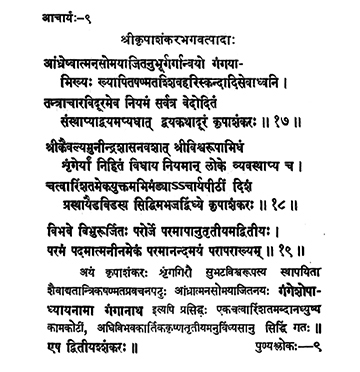

9. आचार्य - 9 - श्रीकृपाशङ्करभगवत्पादाः
आन्ध्रेष्वात्मन ••• कृपाशङ्करः ॥ १७ ॥
श्रीकैवल्य ••• कृपाशङ्करः ॥ १८ ॥
विभवे ••• परापराख्यम् ॥ १९ ॥
Kṛpāśaṅkara, son of Ātmasomayāji in Andhra in the lineage of Garga, with the name Gaṅgayya before initiation established six religions of worship in worshipping Śiva, Hari, Skanda and others away from Tantrik practices and establishing everywhere the non-dualism enunciated in the Vedas, drove away the notion of dualism.
Kṛpāśaṅkara established Śrī Viśvarūpa at Śṛṅgeri under the directions of Śrī Kaivalya Munīndra and formulated precepts; having adorned Ācārya Pīṭha for forty-one years, he departed in the direction of Kubera, vz., North and attained siddhi at vindhyas.
The mighty omniscient (Kṛpāśaṅkara), the One without a second, attained the supreme non-dual state of the Ultimate known as parāpara which is full of Supreme Bliss on the third day of the dark fortnight in the month of Kārthika in the year Vibhava.
